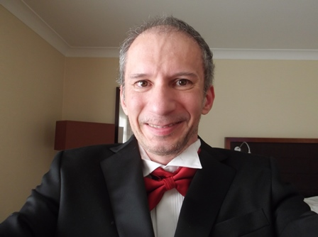

From Computing to Travel

At Marriott Hotel Northampton in Easter 2019
Here's a Timeline of Derek Dhammaloka's Life
- 1969 - Born in Bromley, Kent
- 1980 - Attended First Horse Race Meeting in Epsom, Surrey
- 1982 - First holiday abroad in Belgium
- 1983 - First plane ride to Spain
- 1986 - Received 5 'O' Levels in Maths, Physics, Chemistry, Economics and Computer Studies
1988 - Attended Thames Polytechnic, London
1991 - Received a BSc in Maths, Statistics and Computing
1994 - Passed Driving Test in Sidcup, Kent
2004 - Joined the British Computer Society (BCS) at Affiliate Level
2006 - First ride on Eurostar to Paris
2008 - Joined LinkedIn
2009 - Joined YouTube